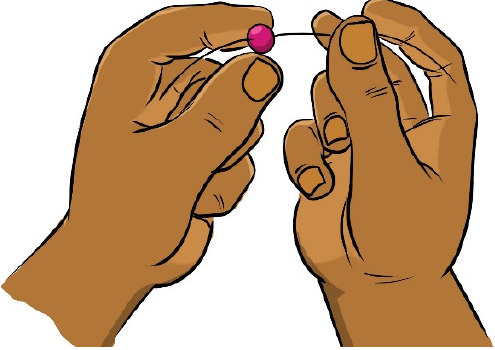
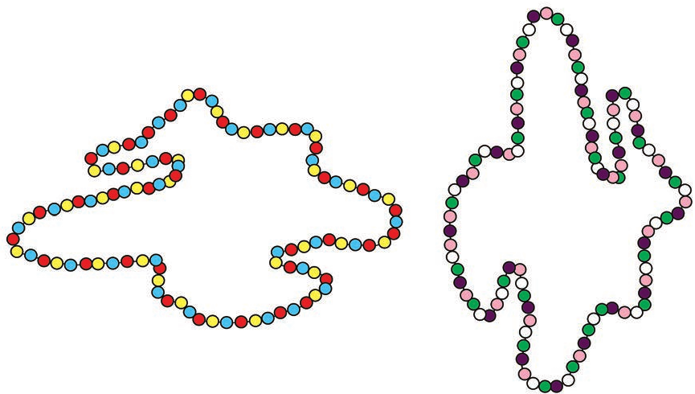

Tutunge vitu
Tutunge vitu
Tunga shanga

Mikono miwili inashikilia uzi na kupitisha shanga moja ya rangi ya pinki.

Mifuatano miwili mirefu ya shanga za rangi mbalimbali imepangwa katika maumbo tofauti.
44